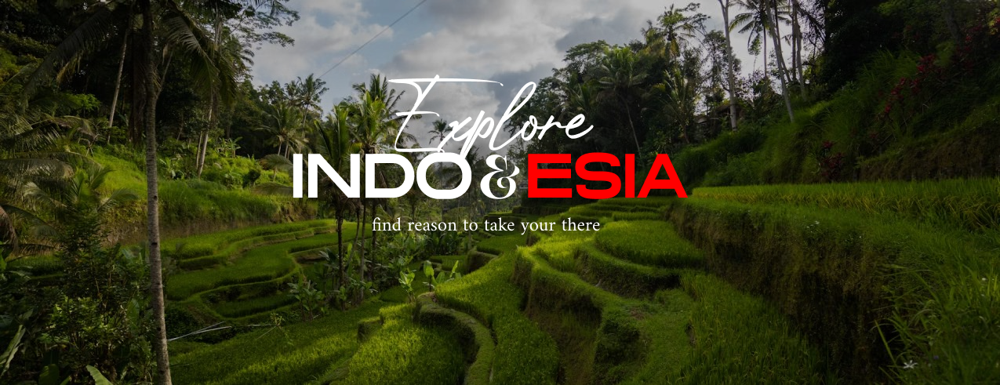

A SHORT STORY ABOUT
Indonesia memiliki beragam keindahan alam yang memukau. Oleh karena itu, ARCHIPELAGO Culture hadir untuk memperkenalkan destinasi-destinasi luar biasa di nusantara. Mengajak Anda untuk mengeksplorasi pesona alam dan budaya yang kaya di Indonesia. Temukan pengalaman tak terlupakan di setiap sudut negeri ini. Dengan rekomendasi tempat-tempat seperti Raja Ampat, Nusa Penida, Pulau Komodo, dan Labuan Bajo.
Discover Indonesia
Nature Wonders

Danau Toba
Danau Toba adalah danau vulkanik terbesar di dunia yang terletak di Sumatra, Indonesia. Terbentuk dari letusan supervulkanik ribuan tahun yang lalu, danau ini memiliki pemandangan spektakuler dengan air biru jernih dan dikelilingi pegunungan hijau. Di tengahnya terdapat Pulau Samosir yang menawarkan wisata budaya Batak. Danau Toba adalah tempat yang sempurna untuk relaksasi dan petualangan, sekaligus menyimpan cerita sejarah dan geologi yang menakjubkan.
Air Terjun Sekumpul
Air Terjun Sekumpul, terletak di desa Sekumpul, Buleleng, Bali, adalah salah satu air terjun terindah di Bali. Terdiri dari tujuh air terjun dengan ketinggian sekitar 80 meter, tempat ini menawarkan pemandangan memukau dan suasana alam yang asri. Perjalanan menuju air terjun ini menantang tetapi sepadan dengan keindahan yang ditemui. Air Terjun Sekumpul adalah destinasi sempurna bagi pencinta alam dan petualangan.

Gunung Bromo
Gunung Bromo di Jawa Timur adalah gunung berapi ikonik dan populer di Indonesia. Bagian dari Taman Nasional Bromo Tengger Semeru, gunung ini memiliki ketinggian sekitar 2.329 meter. Gunung Bromo menawarkan pemandangan matahari terbit yang memukau, dengan langit berwarna emas dan merah muda di atas lautan pasir. Kawahnya yang terus mengepul dan suara gemuruhnya menambah suasana dramatis. Destinasi ini sempurna bagi pencinta alam dan fotografi.
Pulau Komodo
Pulau Komodo, bagian dari Kepulauan Nusa Tenggara di Indonesia, adalah rumah bagi Komodo, kadal terbesar di dunia. Pulau ini merupakan bagian dari Taman Nasional Komodo, yang juga mencakup pulau-pulau Rinca dan Padar. Dengan pantai berpasir putih, perairan biru jernih, dan bukit hijau, Pulau Komodo menawarkan pemandangan alam yang spektakuler. Pengunjung dapat mengamati komodo di habitat alaminya, serta menikmati snorkeling, menyelam, dan mendaki. Keindahan bawah lautnya juga luar biasa, dengan terumbu karang yang kaya akan kehidupan laut. Pulau ini memberikan pengalaman petualangan yang unik dan tak terlupakan.